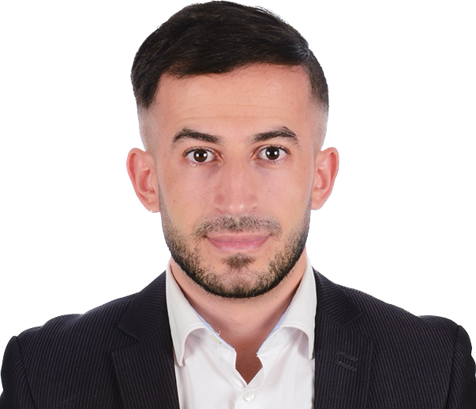

|  |
Profil
Etant étudiant en 1 ère année Bachelor à LaPlateforme, j’ai pu développer mes Contact
✉ : azdine.zahi@lapalteforme.io |
- Structurer la démarche de développement des officines par marché et par laboratoires.
- Organiser le back-office financier et administratif.
- Diffuser les informations et documents auprès des clients.
- Réalisation et déroulement de dossiers de Credoc.
- Complétude et suivi des dossiers clients
- Calcul et étude comparative des recettes fiscales sur plusieurs années (2000-2006).
- Impact sur la trésorerie.
- Recensement des recettes fiscales.